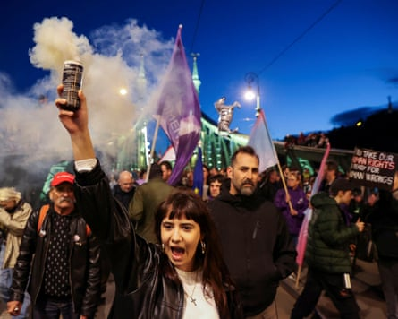
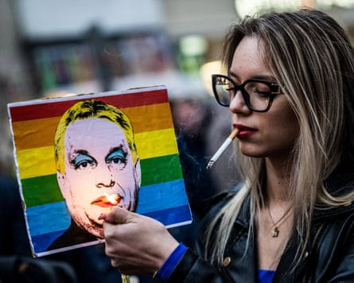
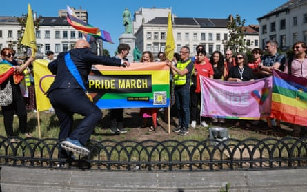

Record numbers of people are expected to take part in Budapest Pride on Saturday, with Hungarians joining forces with campaigners and politicians from across Europe in a march that has become a potent symbol of pushback against the Hungarian government’s steady rollback of rights.
“This weekend, all eyes are on Budapest,” Hadja Lahbib, the European commissioner for equality, told reporters in the Hungarian capital on Friday. “This is bigger than one Pride celebration, one Pride march. It is about the right to be who you are, to love who you want, whether it is in Budapest, in Brussels or anywhere else.”
The country’s main Pride march was cast into doubt earlier this year after the country’s ruling Fidesz party – led by the rightwing populist Viktor Orbán – backed legislation that created a legal basis for Pride to be banned, citing a widely criticised need to protect children. The government also said it would use facial recognition software to identify people attending any banned events, potentially fining them up to €500 (£425).
The move caused outrage from within Hungary and beyond, turning Budapest Pride into a rallying cry against a government that has long faced criticism for weakening democratic institutions and gradually undermining the rule of law.
Lahbib said the EU was standing alongside LGBTQ+ people. “It is a core value to gather peacefully, to be who you are, to love who you want,” she said. “These are the core values that generations before us have built, brick by brick, and we are not going to allow any kind of regression from one of our member states.”
Organisers of Budapest Pride, which this year will mark its 30th anniversary, said the government was attempting to restrict peaceful protests by targeting them. “This event was one of the important milestones of the LGBTQ community,” said its spokesperson Máté Hegedüs. “Our slogan this year is that we are at home. By this, we want to draw attention to the fact that LGBTQ people are an integral part of Hungarian society, just as any other people. In our history, in our culture, this is where we belong.”
A person holds a smoke flare as people gather at the Liberty Bridge in Budapest during a protest in April.Photograph: Bernadett Szabó/Reuters
Hours before the march was due to begin, however, uncertainty loomed over how officials would react.
While Orbán has said that those who attend or organise the march will face “legal consequences”, he said Hungary was a “civilised country” and police would not “break it up … It cannot reach the level of physical abuse”.
Nicolae Ștefănuță, the vice-president of the European parliament, on Friday called on police to respect those attending. “I would like to say that the police and institutions of the state have a duty to protect the citizens,” he said. “It’s as clear as possible.”
The sentiment was echoed in a petition , signed by more than 120,000 people spanning 73 countries, that called on police to “reject this unjust law” – believed to be the first of its kind in the EU’s recent history – and ensure that the march proceeded “unhindered and peacefully, free from discrimination, harassment, fear or violence”.
Despite uncertainty, tens of thousands of Hungarians are expected to take part. Joining them will be politicians and rights campaigners from more than 30 countries, including Ireland’s former taoiseach Leo Varadkar, Spain’s minister of culture, Ernest Urtasun, more than 70 members of the European parliament , and the mayors of Brussels and Amsterdam.
The European Commission president, Ursula von der Leyen, this week joined calls for Hungarian authorities to allow the event to go ahead. Orbán was swift to hit back, likening it to receiving orders from Moscow in communist times. “She thinks she can dictate to Hungarians from Brussels how they should live,” he said in a radio interview.
A woman lights a cigarette placed in a placard depicting Hungary’s prime minister, Viktor Orban.Photograph: Márton Mónus/Reuters
The widespread pushback, both domestic and international, had seemingly done little to dissuade the Hungarian government. This week, the country’s justice minister, Bence Tuzson, appeared to warn embassy staff from attending the event.
“The legal situation is clear: the Pride parade is a legally banned assembly,” he said in a letter seen by the Guardian. “Those who take part in an event prohibited by the authorities commit an infraction,” he said, adding that those organising or announcing the event faced up to a year in prison.
The progressive mayor of Budapest, Gergely Karácsony, has said the gathering will instead go ahead as a municipal event, meaning it will not require official authorisation.
The result was an “extraordinary scenario”, said Márta Pardavi of the Hungarian Helsinki Committee, a human rights organisation. “Currently the legal situation is quite unclear – it is unclear whether this will be a demonstration that the police have banned or whether it will be some other type of event, as Mayor Karácsony has talked about.”
The NGO has joined forces with two other organisations to produce a Q&A for the event, addressing concerns such as whether attenders risk being fired from their jobs and whether being fined could later jeopardise university entrance or foreign travel. The organisations have also promised to provide legal aid to any participants who are fined.
Complicating matters were three countermarches planned on Saturday by groups with ties to the extreme right, said Pardavi. “This means you will have a lot of people with very, very different views on the streets,” she said.
Analysts have described the government’s hardline stance against Pride as another move in its years-long rollback of LGBTQ+ rights. This time, however, it comes as Orbán faces an unprecedented challenge from a former member of the Fidesz party’s elite, Péter Magyar, before next year’s elections, leading organisers to suggest they are being scapegoated as Orbán scrambles to shore up support among conservative voters.
Members of the European parliament pose with Amnesty International activists during a ‘Mini Pride’ demonstration against the ban in front of the European parliament in Brussels on Wednesday.Photograph: Olivier Hoslet/EPA
The widespread view has led Hungarians from all walks of life – including many who have never marched before – to take part in Saturday’s event.
“These are the actions of a government in the run-up to an election they fear they will lose, so they are trying to distract public attention from their deep corruption and unpopularity,” said Andrew Ryder, who is among a group of academics from Eötvös Loránd University in Budapest who will be joining the march in solidarity.
“I am deeply concerned that my home, Hungary, is on a trajectory that will lead to fascism,” he said. “However, the mood of the country is turning and if Hungary can restore its democracy it could be a model for other countries trying to overcome authoritarianism.”
Nearly 50 organisations from across Europe have meanwhile urged EU officials to launch an infringement procedure against Hungary, citing the possibility that real-time facial recognition would be used on attenders. If so, it would be a “glaring violation” of the EU’s recently adopted Artificial Intelligence Act, the letter noted . Hungarian officials have yet to release details on how the technology will be deployed.
“Hungary’s use of facial recognition to surveil Pride events marks a worrying change in how new technologies can be used to suppress dissent and target marginalised communities,” the Civil Liberties Union for Europe, one of the signatories of the letter, said in a statement . It said it risked a “dangerous precedent by normalising invasive monitoring of peaceful gatherings and undermining civil liberties”.